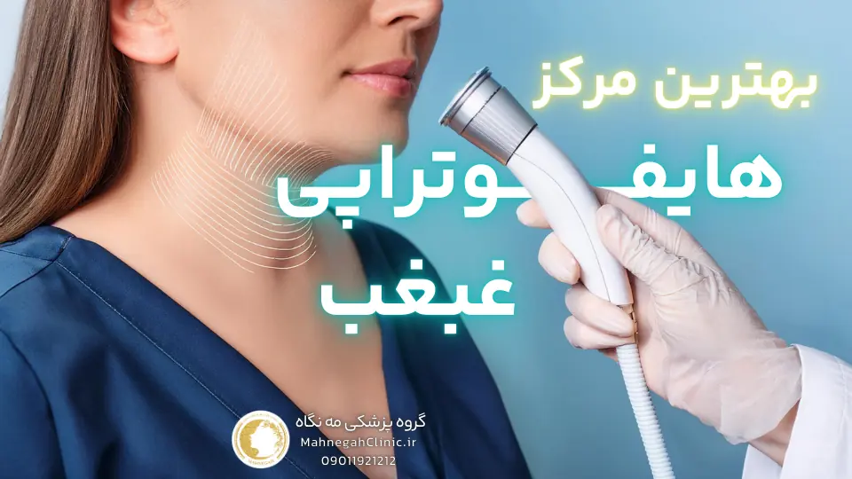
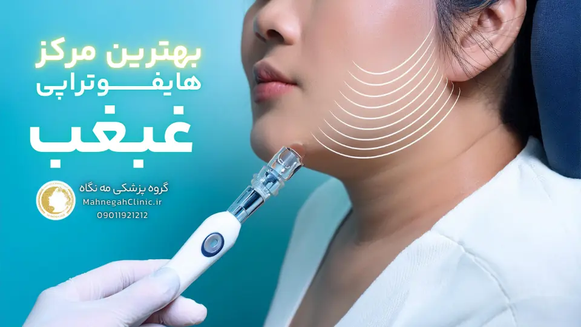
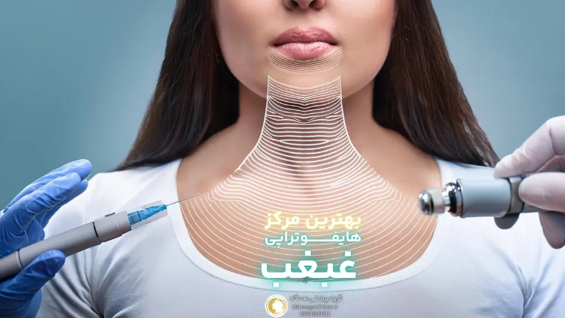
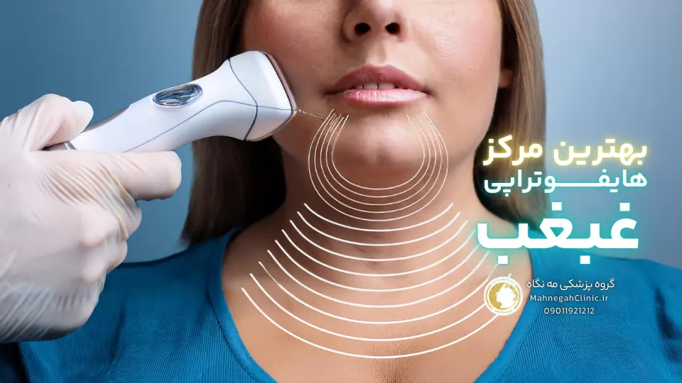
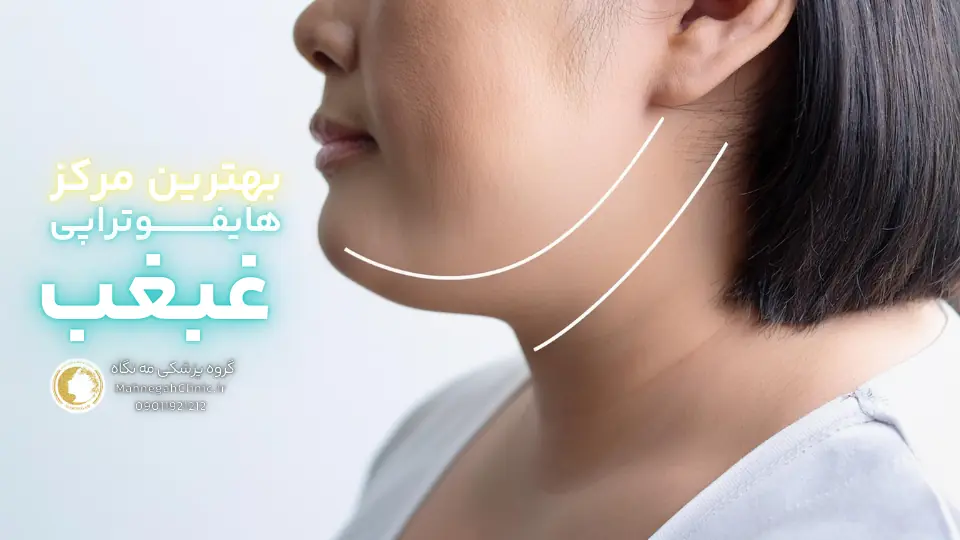
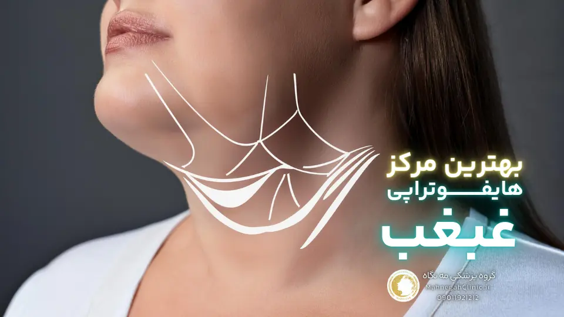
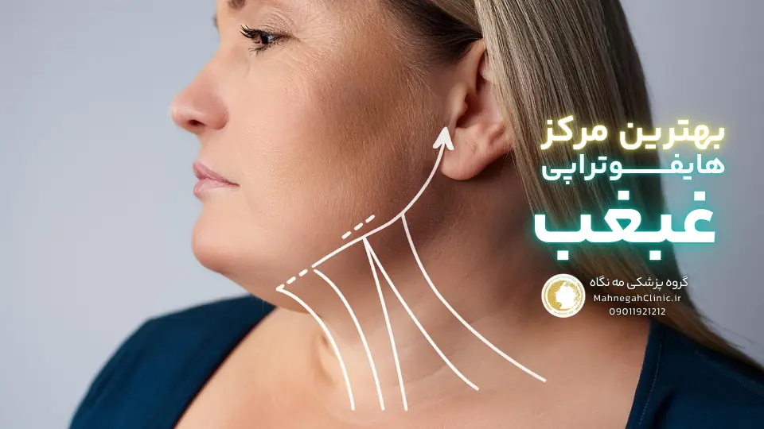

خانه / مجله / جوانسازی پوست
بهترین مرکز هایفوتراپی غبغب در سعادت آباد کجاست؟

آدرس مه نگاه: سعادت آباد، بخشایش، ساختمان عرفان، واحد 108
در قلب سعادت آباد، جایی که زیبایی و سلامت در هم میآمیزند، گروه پزشکی مه نگاه (بهترین مرکز هایفوتراپی غبغب در سعادت آباد) با افتخار آماده ارائه خدمات هایفو غبغب با بالاترین کیفیت به شما عزیزان است.
ما در این مرکز، با بهرهگیری از تخصص پزشکان مجرب، استفاده از تکنولوژیهای روز دنیا و محیطی آرام و دلنشین، به شما کمک میکنیم تا جوانی و شادابی پوست خود را بازیابید و اعتماد به نفس خود را افزایش دهید.
اگر به دنبال بهترین مرکز هایفوتراپی غبغب در سعادت آباد هستید، گروه پزشکی مه نگاه با ارائه خدماتی فراتر از انتظار، انتخابی ایدهآل برای شما خواهد بود. ما در این مرکز، با تمرکز بر نیازها و خواستههای شما، بهترین و مناسبترین روش درمانی را برای شما انتخاب میکنیم و در تمام مراحل درمان، در کنار شما هستیم.
منتظر حضور گرم شما در گروه پزشکی مه نگاه هستیم. برای کسب اطلاعات بیشتر و رزرو نوبت، با ما تماس بگیرید.
آدرس: سعادت آباد، خیابان ریاضی بخشایش، ساختمان عرفان
موبایل:
تلفن:
لوکیشن: بهترین مرکز هایفوتراپی صورت در سعادت آباد
1. هایفوتراپی غبغب چیست و چگونه عمل میکند؟
هایفوتراپی غبغب یک روش غیرتهاجمی و مؤثر برای از بین بردن چربیهای اضافی زیر چانه و سفت کردن پوست این ناحیه است. این روش با استفاده از امواج اولتراسوند متمرکز با شدت بالا (HIFU) عمل میکند. این امواج به لایههای عمیق پوست نفوذ کرده و با ایجاد گرما در بافت چربی، باعث تخریب سلولهای چربی میشوند. همچنین، این گرما باعث تحریک تولید کلاژن و الاستین در پوست میشود که به سفت شدن و لیفت پوست کمک میکند. در ادامه بهترین مرکز هایفوتراپی غبغب در سعادت آباد را به شما معرفی میکنیم.
مزایای هایفوتراپی غبغب نسبت به سایر روشها
- غیرتهاجمی بودن: هایفوتراپی غبغب نیازی به برش، بخیه و بیهوشی ندارد و در نتیجه عوارض جانبی کمتری نسبت به روشهای جراحی مانند لیپوساکشن دارد.
- دوره نقاهت کوتاه: پس از هایفوتراپی، شما میتوانید بلافاصله به فعالیتهای روزمره خود بازگردید و نیازی به استراحت طولانی مدت ندارید.
- نتایج طبیعی و ماندگار: هایفوتراپی غبغب باعث ایجاد نتایج طبیعی و تدریجی میشود که میتوانند تا چندین ماه و حتی سالها ماندگار باشند.
- ایمنی بالا: هایفوتراپی غبغب یک روش ایمن و تأیید شده توسط سازمان غذا و داروی آمریکا (FDA) است.
آیا هایفوتراپی غبغب درد دارد؟
هایفوتراپی غبغب معمولاً با درد کمی همراه است و اکثر افراد آن را قابل تحمل توصیف میکنند. برخی افراد ممکن است در طول درمان احساس گرما یا سوزش خفیفی داشته باشند. در صورت نیاز، پزشک میتواند از کرم بیحسی موضعی برای کاهش ناراحتی استفاده کند.
در کل، هایفوتراپی غبغب یک روش ایمن، مؤثر و غیرتهاجمی برای از بین بردن غبغب و بهبود ظاهر صورت است. اگر به دنبال یک راه حل غیرجراحی برای رفع غبغب هستید، هایفوتراپی میتواند گزینه مناسبی برای شما باشد.

2. بهترین مرکز هایفوتراپی غبغب در سعادت آباد را چگونه پیدا کنیم؟
با وجود تعدد مراکز ارائه دهنده خدمات زیبایی در سعادت آباد، انتخاب بهترین مرکز هایفوتراپی غبغب میتواند چالشبرانگیز باشد. اما نگران نباشید، با در نظر گرفتن چند نکته کلیدی میتوانید بهترین مرکز را برای رفع غبغب خود انتخاب کنید. در این بخش، به شما کمک میکنیم تا با ویژگیهای یک مرکز ایدهآل آشنا شوید و اهمیت مشاوره قبل از هایفوتراپی را درک کنید.
برای دیدن لوکیشن بهترین مرکز هایفوتراپی غبغب در سعادت آباد اینجا کلیلک کنید
ویژگیهای بهترین مرکز هایفوتراپی غبغب در سعادت آباد ایدهآل
- تخصص و تجربه: اطمینان حاصل کنید که مرکز مورد نظر شما دارای پزشکان و تکنسینهای متخصص و با تجربه در زمینه هایفوتراپی است. بررسی مدارک تحصیلی و سوابق کاری آنها میتواند به شما در این زمینه کمک کند.
- تجهیزات پیشرفته: استفاده از دستگاههای هایفوتراپی با کیفیت و بهروز، تأثیر بسزایی در نتیجه درمان دارد. مطمئن شوید که مرکز انتخابی شما از تجهیزات مدرن و استاندارد استفاده میکند.
- نظرات و رضایت مراجعین: مطالعه نظرات و تجربیات مراجعین قبلی میتواند اطلاعات ارزشمندی درباره کیفیت خدمات و نتایج درمان در اختیار شما قرار دهد.
- رعایت بهداشت و ایمنی: بهداشت و ایمنی محیط مرکز و تجهیزات مورد استفاده، از اهمیت بالایی برخوردار است. اطمینان حاصل کنید که مرکز انتخابی شما تمام پروتکلهای بهداشتی را رعایت میکند.
- مشاوره تخصصی: یک مرکز خوب، مشاوره تخصصی و کاملی قبل از درمان به شما ارائه میدهد. در این جلسه، پزشک باید به تمام سوالات شما پاسخ دهد، انتظارات شما را بررسی کند و بهترین روش درمانی را برای شما پیشنهاد دهد.
مشاوره قبل از هایفوتراپی غبغب
مشاوره قبل از هایفوتراپی، یک مرحله حیاتی در فرآیند درمان است. در این جلسه، شما میتوانید با پزشک خود درباره موارد زیر صحبت کنید:
- اهداف و انتظارات شما از درمان
- شرایط پزشکی و سابقه بیماریهای شما
- مزایا، معایب و عوارض احتمالی هایفوتراپی
- مراقبتهای قبل و بعد از درمان
- هزینه هایفوتراپی
با انجام یک مشاوره کامل و تخصصی، میتوانید با اطمینان بیشتری تصمیم بگیرید که آیا هایفوتراپی غبغب برای شما مناسب است یا خیر و بهترین مرکز را برای انجام این درمان انتخاب کنید.

3. لیپوساکشن غبغب یا هایفوتراپی: کدام بهتر است؟
وقتی صحبت از رفع غبغب میشود، دو روش محبوب و موثر لیپوساکشن غبغب و هایفوتراپی به ذهن میرسند. هر کدام از این روشها مزایا و معایب خاص خود را دارند و انتخاب بهترین روش به نیازها و شرایط شما بستگی دارد. در این بخش، به مقایسه این دو روش میپردازیم تا به شما در تصمیمگیری آگاهانه کمک کنیم.
مقایسه مزایا و معایب هر روش
- لیپوساکشن غبغب
مزایا: * حذف سریع و قابل توجه چربی غبغب * نتایج دائمی در صورت حفظ وزن و سبک زندگی سالم * امکان رفع غبغبهای بزرگ و شدید
معایب: * نیاز به بیهوشی و برشهای کوچک * دوره نقاهت طولانیتر نسبت به هایفوتراپی * احتمال بروز عوارض جانبی مانند تورم، کبودی و عفونت
- هایفوتراپی غبغب
مزایا: * غیرتهاجمی و بدون نیاز به برش و بیهوشی * دوره نقاهت کوتاه و بازگشت سریع به فعالیتهای روزمره * تحریک تولید کلاژن و سفت شدن پوست علاوه بر حذف چربی
معایب: * نتایج تدریجی و نیاز به چند جلسه درمانی * ممکن است برای غبغبهای بسیار بزرگ و شدید مناسب نباشد * احتمال بروز عوارض جانبی خفیف مانند قرمزی و تورم
انتخاب بهترین روش بر اساس نیاز و شرایط شما
اگر به دنبال یک روش سریع و دائمی برای رفع غبغب هستید و مشکلی با دوره نقاهت ندارید، لیپوساکشن غبغب میتواند گزینه مناسبی برای شما باشد. اما اگر ترجیح میدهید از روشهای غیرتهاجمی استفاده کنید و به دنبال بهبود کیفیت پوست نیز هستید، هایفوتراپی غبغب انتخاب بهتری است.
در نهایت، بهترین راه برای تصمیمگیری، مشاوره با یک پزشک متخصص و با تجربه است. پزشک میتواند با بررسی شرایط شما، بهترین روش درمانی را برایتان پیشنهاد دهد.
در ادامه، به بررسی عوارض هایفوتراپی غبغب و راههای کاهش آنها میپردازیم. با ما همراه باشید.

4. عوارض هایفوتراپی غبغب چیست و چگونه میتوان آنها را کاهش داد؟
اگرچه هایفوتراپی غبغب یک روش ایمن و غیرتهاجمی محسوب میشود، اما مانند هر روش درمانی دیگری، ممکن است با عوارض جانبی همراه باشد. آگاهی از این عوارض و راههای کاهش آنها، به شما کمک میکند تا با اطمینان بیشتری این روش را انتخاب کنید و از نتایج آن لذت ببرید. در این بخش، به بررسی عوارض شایع و نادر هایفوتراپی غبغب و همچنین مراقبتهای پس از آن میپردازیم.
عوارض شایع و نادر هایفوتراپی غبغب - بهترین مرکز هایفوتراپی غبغب در سعادت آباد
- عوارض شایع:
- قرمزی و تورم خفیف در ناحیه درمان: این عارضه معمولاً طی چند ساعت یا چند روز پس از درمان برطرف میشود.
- احساس سوزن سوزن شدن یا بیحسی موقت: این عارضه نیز معمولاً خفیف بوده و طی چند روز بهبود مییابد.
- کبودی خفیف: در برخی موارد، ممکن است کبودی خفیفی در ناحیه درمان ایجاد شود که طی چند روز برطرف میشود.
- عوارض نادر:
- سوختگی پوست: در موارد نادر و در صورت عدم تنظیم صحیح دستگاه یا عدم مهارت پزشک، ممکن است سوختگی پوست رخ دهد.
- آسیب به اعصاب صورت: این عارضه بسیار نادر است و در صورت انتخاب پزشک متخصص و با تجربه، احتمال وقوع آن بسیار کم است.
- نتایج نامطلوب: در برخی موارد، ممکن است نتایج هایفوتراپی غبغب مطابق انتظار نباشد. این موضوع میتواند به دلیل عدم مهارت پزشک، تنظیم نادرست دستگاه یا عدم رعایت مراقبتهای پس از درمان باشد.
مراقبتهای پس از هایفوتراپی برای کاهش عوارض در بهترین مرکز هایفوتراپی غبغب در سعادت آباد
- استفاده از کمپرس سرد: در صورت بروز تورم یا قرمزی، میتوانید از کمپرس سرد برای کاهش این عوارض استفاده کنید.
- اجتناب از قرار گرفتن در معرض نور خورشید: تا چند روز پس از درمان، از قرار گرفتن مستقیم در معرض نور خورشید خودداری کنید و از کرم ضد آفتاب با SPF بالا استفاده کنید.
- اجتناب از فعالیتهای سنگین: تا چند روز پس از درمان، از انجام فعالیتهای سنگین و ورزشهای شدید خودداری کنید.
- مصرف داروهای مسکن: در صورت نیاز، میتوانید از داروهای مسکن بدون نسخه مانند استامینوفن برای کاهش درد استفاده کنید.
- رعایت سایر توصیههای پزشک: پزشک شما ممکن است توصیههای دیگری نیز برای مراقبت پس از درمان به شما ارائه دهد. حتماً این توصیهها را به دقت رعایت کنید.
با رعایت مراقبتهای لازم و انتخاب یک مرکز معتبر و پزشک متخصص، میتوانید عوارض هایفوتراپی غبغب را به حداقل برسانید و از نتایج مطلوب این درمان لذت ببرید.
در ادامه، به بررسی ماندگاری هایفوتراپی غبغب و عوامل موثر بر آن می پردازیم. با ما همراه باشید.

5. ماندگاری هایفوتراپی غبغب چقدر است و چه عواملی بر آن تأثیر میگذارند؟
یکی از سوالات رایج در مورد هایفوتراپی غبغب، ماندگاری نتایج آن است. خوشبختانه، هایفوتراپی غبغب میتواند نتایج ماندگاری را برای شما به ارمغان بیاورد، اما این ماندگاری به عوامل مختلفی بستگی دارد. در این بخش، به بررسی این عوامل و راهکارهایی برای افزایش ماندگاری نتایج میپردازیم.
عوامل مؤثر بر ماندگاری هایفوتراپی غبغب
- سن: با افزایش سن، روند تولید کلاژن و الاستین در پوست کاهش مییابد، بنابراین ممکن است ماندگاری نتایج در افراد جوانتر بیشتر باشد.
- میزان چربی غبغب: هر چه میزان چربی غبغب بیشتر باشد، ممکن است به جلسات درمانی بیشتری نیاز باشد و ماندگاری نتایج نیز تحت تأثیر قرار گیرد.
- سبک زندگی: حفظ وزن سالم، تغذیه مناسب و ورزش منظم میتواند به ماندگاری نتایج هایفوتراپی کمک کند.
- مراقبتهای پس از درمان: رعایت دقیق مراقبتهای توصیه شده توسط پزشک، نقش مهمی در حفظ نتایج درمان دارد.
راهکارهایی برای افزایش ماندگاری نتایج - بهترین مرکز هایفوتراپی غبغب در سعادت آباد
- تکرار جلسات درمانی: در برخی موارد، ممکن است پزشک برای حفظ نتایج، تکرار جلسات درمانی را در فواصل زمانی مشخص توصیه کند.
- حفظ وزن سالم: افزایش وزن میتواند باعث بازگشت چربی در ناحیه غبغب شود. بنابراین، حفظ وزن سالم اهمیت زیادی دارد.
- تغذیه مناسب: مصرف غذاهای سالم و سرشار از آنتیاکسیدانها میتواند به حفظ سلامت و جوانی پوست کمک کند.
- ورزش منظم: ورزش منظم باعث افزایش جریان خون و اکسیژنرسانی به پوست میشود و به حفظ نتایج هایفوتراپی کمک میکند.
- استفاده از محصولات مراقبت از پوست: استفاده از محصولات مرطوبکننده و ضد آفتاب میتواند به حفظ سلامت و جوانی پوست کمک کند.
با رعایت این نکات و پیروی از توصیههای پزشک، میتوانید از نتایج ماندگار هایفوتراپی غبغب خود لذت ببرید و اعتماد به نفس خود را افزایش دهید.
در ادامه، به بررسی قیمت هایفوتراپی غبغب در سعادت آباد و عوامل موثر بر آن میپردازیم. با ما همراه باشید.

6. قیمت بهترین مرکز هایفوتراپی غبغب در سعادت آباد چقدر است و چه عواملی بر آن تأثیر میگذارند؟
یکی از مهمترین سوالاتی که پیش از انجام هایفوتراپی غبغب به ذهن میرسد، هزینه این روش درمانی است. قیمت هایفوتراپی غبغب در سعادت آباد میتواند متغیر باشد و به عوامل متعددی بستگی دارد. در این بخش، به بررسی این عوامل و ارائه یک تخمین کلی از هزینهها میپردازیم.
عوامل مؤثر بر قیمت هایفوتراپی غبغب
- تجربه و تخصص پزشک: پزشکان با تجربه و متخصص معمولاً هزینه بیشتری برای خدمات خود دریافت میکنند.
- نوع و کیفیت دستگاه هایفوتراپی: استفاده از دستگاههای پیشرفته و با کیفیت میتواند بر هزینه درمان تأثیر بگذارد.
- تعداد جلسات درمانی: بسته به میزان چربی غبغب و نتایج مورد انتظار، ممکن است به چند جلسه درمانی نیاز باشد که بر هزینه کلی تأثیر میگذارد.
- موقعیت جغرافیایی کلینیک: هزینهها در مناطق مختلف شهر، به ویژه در مناطقی مانند سعادت آباد که هزینههای زندگی بالاتر است، میتواند متفاوت باشد.
- خدمات اضافی: برخی کلینیکها ممکن است خدمات اضافی مانند مشاوره تخصصی یا ماساژ صورت را نیز ارائه دهند که میتواند بر هزینه نهایی تأثیر بگذارد.
تخمین هزینه برای بهترین مرکز هایفوتراپی غبغب در سعادت آباد
با توجه به عوامل ذکر شده، قیمت هایفوتراپی غبغب در سعادت آباد میتواند از حدود 1 میلیون تومان تا 5 میلیون تومان یا حتی بیشتر متغیر باشد. برای دریافت قیمت دقیق، بهتر است با چند کلینیک معتبر در سعادت آباد تماس بگیرید و مشاوره رایگان دریافت کنید.
نکته مهم: در انتخاب کلینیک، تنها به قیمت توجه نکنید. کیفیت خدمات، تخصص پزشک و استفاده از تجهیزات پیشرفته از اهمیت بیشتری برخوردارند.
در ادامه، به بررسی نظرات کسانی که هایفوتراپی غبغب انجام دادهاند میپردازیم. با ما همراه باشید.

7. نظرات کسانی که هایفوتراپی غبغب انجام دادهاند: تجربیات واقعی
یکی از بهترین راهها برای سنجش اثربخشی و رضایت از هایفوتراپی غبغب، گوش دادن به نظرات و تجربیات افرادی است که این روش را امتحان کردهاند. این نظرات میتوانند به شما در تصمیمگیری بهتر و انتخاب بهترین مرکز هایفوتراپی غبغب در سعادت آباد کمک کنند.
جمعآوری نظرات مثبت و منفی از مراجعین - بهترین مرکز هایفوتراپی غبغب در سعادت آباد
در این بخش، برخی از نظرات واقعی افرادی که هایفوتراپی غبغب را در بهترین مرکز هایفوتراپی غبغب در سعادت آباد انجام دادهاند را با شما به اشتراک میگذاریم:
- نظرات مثبت:
"من از نتیجه هایفوتراپی غبغبم بسیار راضی هستم. غبغبم به طور قابل توجهی کاهش یافته و پوستم سفتتر شده است. این روش واقعاً معجزه کرد!" مهسا کمانی
"هایفوتراپی غبغب یک روش عالی و بدون دردسر بود. من هیچ عارضه جانبی نداشتم و از نتیجه نهایی بسیار خوشحالم." رویا امیری
"من قبلاً به جراحی فکر میکردم، اما هایفوتراپی غبغب را امتحان کردم و پشیمان نیستم. این روش بسیار راحتتر و کمعارضهتر از جراحی است." مریم حامدی
- نظرات منفی:
"من انتظار نتیجه بهتری از هایفوتراپی غبغب داشتم. غبغبم کمی کاهش یافته، اما نه به اندازهای که میخواستم." ساناز جعفری
"من بعد از هایفوتراپی کمی تورم و کبودی داشتم، اما خوشبختانه این عوارض بعد از چند روز برطرف شدند." ساناز باقری
"هزینه هایفوتراپی غبغب کمی بالا بود، اما به نظرم ارزشش را داشت." نسرین نادری
اهمیت انتخاب مرکز معتبر بر اساس نظرات مراجعین
همانطور که مشاهده میکنید، نظرات افراد درباره هایفوتراپی غبغب متفاوت است. برخی از نتایج بسیار راضی هستند، در حالی که برخی دیگر انتظار بیشتری داشتند. این تفاوتها میتواند به عوامل مختلفی مانند مهارت پزشک، کیفیت دستگاه و رعایت مراقبتهای پس از درمان بستگی داشته باشد.
به همین دلیل، انتخاب یک مرکز هایفوتراپی معتبر و با سابقه درخشان بسیار اهمیت دارد. مطالعه نظرات مراجعین قبلی و بررسی نمونه کارهای کلینیک میتواند به شما در انتخاب بهترین مرکز کمک کند.
در بخش بعدی، به سوالات متداول درباره هایفوتراپی غبغب پاسخ میدهیم. با ما همراه باشید.
8. پاسخ به سوالات متداول درباره بهترین مرکز هایفوتراپی غبغب در سعادت آباد
در این بخش، به برخی از سوالات رایج درباره هایفوتراپی غبغب پاسخ میدهیم تا ابهامات شما را برطرف کنیم و به شما در تصمیمگیری بهتر کمک کنیم.
آیا هایفو غبغب را به طور کامل از بین میبرد؟
هایفوتراپی غبغب میتواند به طور قابل توجهی چربیهای اضافی زیر چانه را کاهش دهد و باعث سفت شدن پوست این ناحیه شود. اما میزان اثربخشی آن به عوامل مختلفی مانند میزان چربی غبغب، سن، سبک زندگی و تعداد جلسات درمانی بستگی دارد. در برخی موارد، ممکن است برای دستیابی به نتایج مطلوب، نیاز به چند جلسه درمانی باشد.
هایفوتراپی غبغب چند جلسه نیاز دارد؟
تعداد جلسات مورد نیاز برای هایفوتراپی غبغب به شرایط هر فرد بستگی دارد. معمولاً یک تا سه جلسه درمانی برای دستیابی به نتایج مطلوب کافی است. پزشک شما در جلسه مشاوره، تعداد جلسات مورد نیاز را بر اساس شرایط شما تعیین خواهد کرد.
مراقبتهای پس از هایفوتراپی غبغب چیست؟
- پس از هایفوتراپی غبغب، ممکن است کمی قرمزی، تورم یا کبودی در ناحیه درمان مشاهده کنید. این عوارض معمولاً خفیف بوده و طی چند روز برطرف میشوند.
- برای کاهش تورم، میتوانید از کمپرس سرد استفاده کنید.
- تا چند روز پس از درمان، از قرار گرفتن مستقیم در معرض نور خورشید خودداری کنید و از کرم ضد آفتاب با SPF بالا استفاده کنید.
- از انجام فعالیتهای سنگین و ورزشهای شدید تا چند روز پس از درمان خودداری کنید.
- در صورت نیاز، میتوانید از داروهای مسکن بدون نسخه مانند استامینوفن برای کاهش درد استفاده کنید.
- حتماً توصیههای پزشک خود را در مورد مراقبتهای پس از درمان به دقت رعایت کنید.
امیدواریم این مقاله به شما در شناخت بهتر هایفوتراپی غبغب و انتخاب بهترین مرکز درمانی کمک کرده باشد. در صورت داشتن هرگونه سوال دیگری، میتوانید با ما تماس بگیرید.
پرسش و پاسخ درباره بهترین مرکز هایفوتراپی غبغب در سعادت آباد
خیر، هایفوتراپی غبغب معمولا بدون درد است و در صورت نیاز میتوان از کرم بیحسی استفاده کرد.
ممکن است عوارض خفیفی مانند قرمزی، تورم یا کبودی موقت ایجاد شود که طی چند روز برطرف میشوند.
نتایج اولیه را میتوان چند هفته پس از درمان مشاهده کرد، اما نتایج نهایی طی چند ماه ظاهر میشوند.
هایفوتراپی برای اکثر افراد مناسب است، اما بهتر است قبل از درمان با پزشک مشورت کنید.
هزینه هایفوتراپی به عوامل مختلفی بستگی دارد، اما معمولا بین 1 تا 5 میلیون تومان است. برای اطلاع دقیق از هزینهها، بهتر است با کلینیک تماس بگیرید.